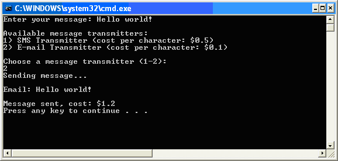

Creating the Host Application
This section explains how to use the plug-in framework top provide plug-in functionality within an application or component.
Creating the Host Application
The first thing to do is create an instance of the plug-in registry using the plug-in manager (see PluginManager):
string applicationDirectory = Path.GetDirectoryName(Assembly.GetEntryAssembly().Location);
string pluginsDirectory = Path.Combine(applicationDirectory, "plugins");
// create plug-in registry
IPluginRegistry pluginRegistry =
PluginManager.CreatePluginRegistry(pluginsDirectory, "plugincache.xml", false);
We define the plugins directory as the plugins subfolder of the bin folder, where the plug-in manifest file is located. Then, use the PluginManager class to create a plug-in registry instance, passing three parameters:
- The plugins directory
- The plug-in cache file path: this file is used to store which plug-ins are enabled or disabled in case your application would support this.
- A boolean specifying whether to validate all plug-in manifest files found. We pass false, because that ensures that all the extensions are lazily loaded, which is the recommended way. In case there is a problem, we will get an exception when we try to create an instance of the extension or access its meta data. When creating the plug-in registry, the plugins directory is scanned for plug-in manifest files and these are loaded. At this point, the plug-in registry knows about all the plug-ins and extensions that are available to the application.
Next, we get the extension point from the plug-in registry. An extension point is represented by the IExtensionPoint interface and provides access to all extensions discovered for that extension point. The extension point is identified by passing MessageTransmitterAttribute as the template parameter:
IExtensionPoint extensionPoint = pluginRegistry.GetExtensionPoint<MessageTransmitterAttribute>();
Prompt the user to enter a message:
Console.Write("Enter your message: ");
string message = Console.ReadLine();
Now list all the available message transmitters, along with their name and the cost per character. This is done by iterating over the Extensions collection of the extension point, which contains IExtension objects. These provide access to the extension attribute that was used to annotate the respective extension implementation classes. The name and cost per character can be retreived from that MessageTransmitterAttribute:
int i = 0;
Console.WriteLine("Available message transmitters:");
foreach (IExtension extension in extensionPoint.Extensions)
{
MessageTransmitterAttribute extensionAttribute =
(MessageTransmitterAttribute)extension.ExtensionAttribute;
Console.WriteLine(String.Format("{0}) {1} (cost per character: ${2})",
++i,
extensionAttribute.Name,
extensionAttribute.CostPerCharacter));
}
Console.WriteLine(String.Format("Choose a message transmitter (1-{0}):", i));
int number = Convert.ToInt32(Console.ReadLine());
Now, get the extension object corresponding to the user’s choice, and also get hold of the extension attribute instance:
IExtension selectedExtension = extensionPoint.Extensions[number - 1];
Now, we are ready to create the actual message transmitter implementation, using the IExtension object:
IMessageTransmitter selectedTransmitter =
(IMessageTransmitter)selectedExtension.CreateInstance();
Finally, call the SendMessage method to send the message:
selectedTransmitter.SendMessage(message);
The application produces the following output:

This completes the basic use case, demonstrated by a simple sample application.
Note
This content may be out-of-date. To check the latest information on this topic, inspect the libraries using the Visual Studio Object Browser.